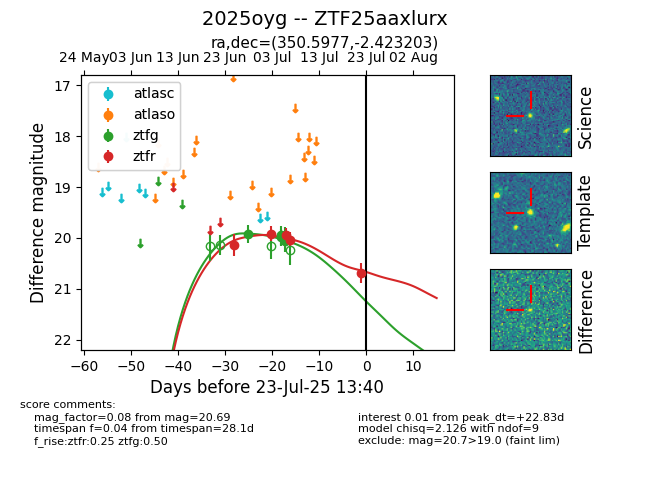

Target ZTF25aaxlurx at 2025-07-23 13:40, see:
FINK: fink-portal.org/ZTF25aaxlurx
Lasair: lasair-ztf.lsst.ac.uk/objects/ZTF25aaxlurx
ALeRCE: alerce.online/object/ZTF25aaxlurx
TNS: wis-tns.org/object/2025oyg
YSE: ziggy.ucolick.org/yse/transient_detail/2025oyg
alt names
ZTF25aaxlurx (ztf,fink)
2025oyg (tns,yse)
coordinates:
equatorial (ra, dec) = (350.5977,-2.42320)
galactic (l, b) = (78.3444,-57.37243)
photometry
last ztfg=19.95, ztfr=20.69
5 ztfg, 5 ztfr detections
